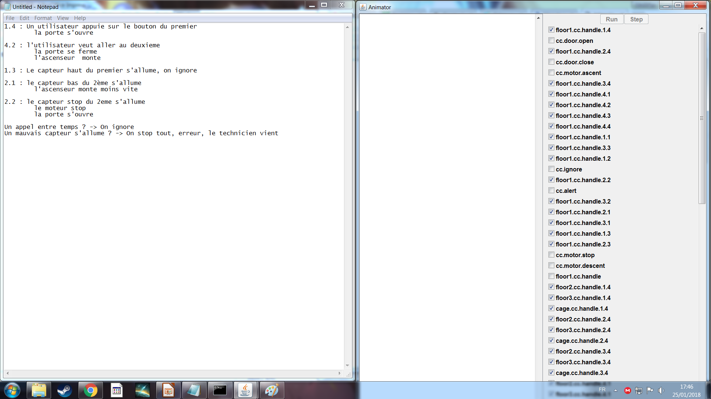
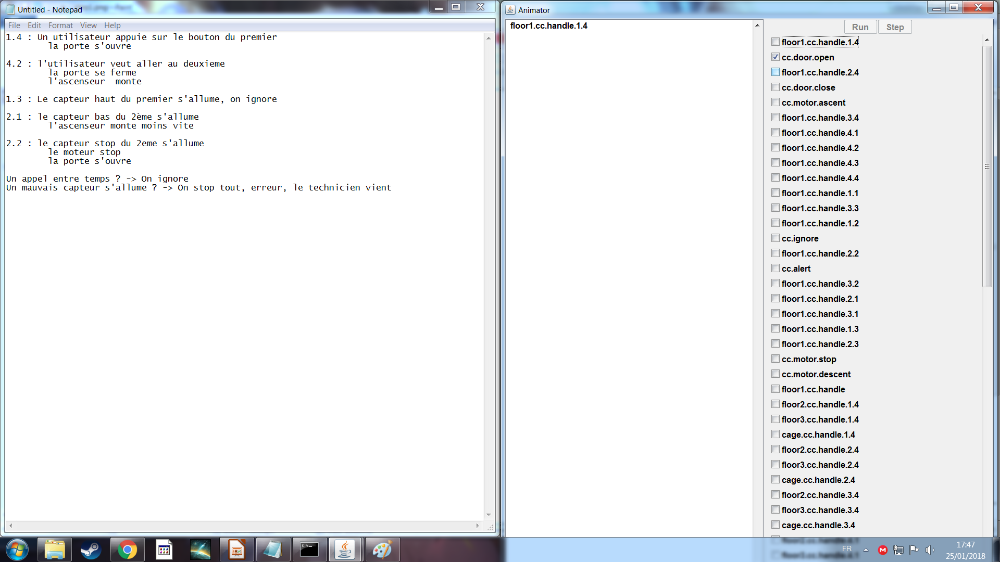
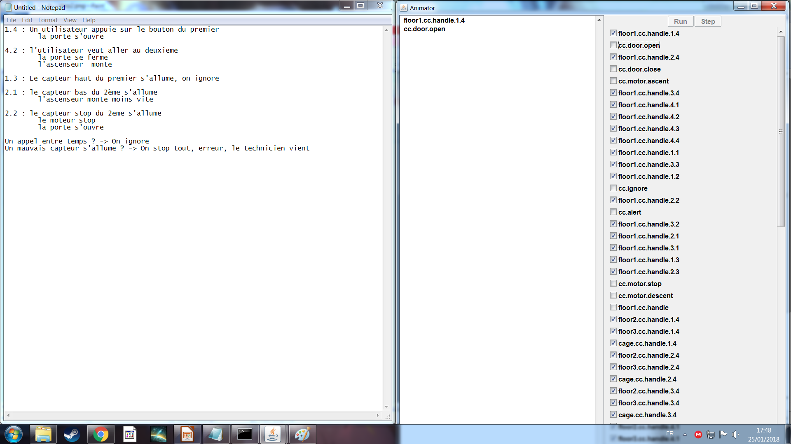
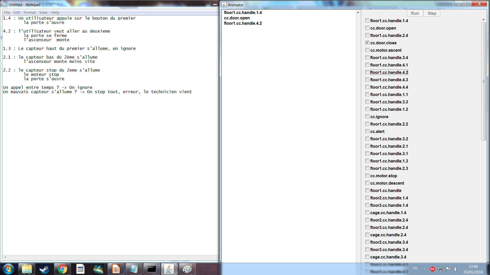
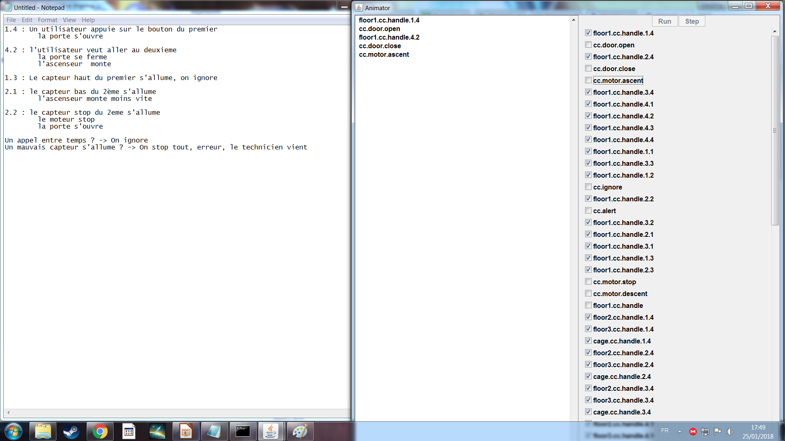
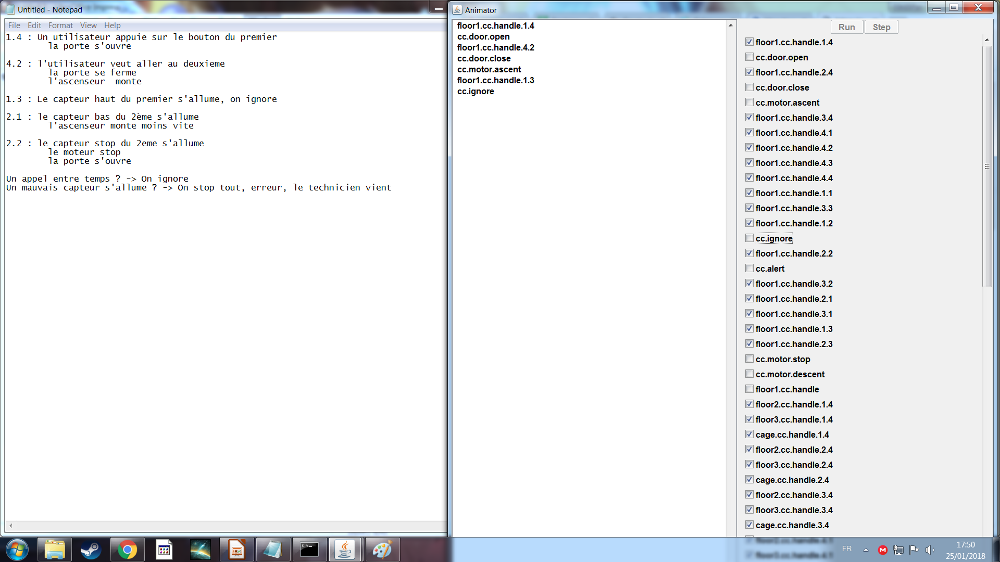
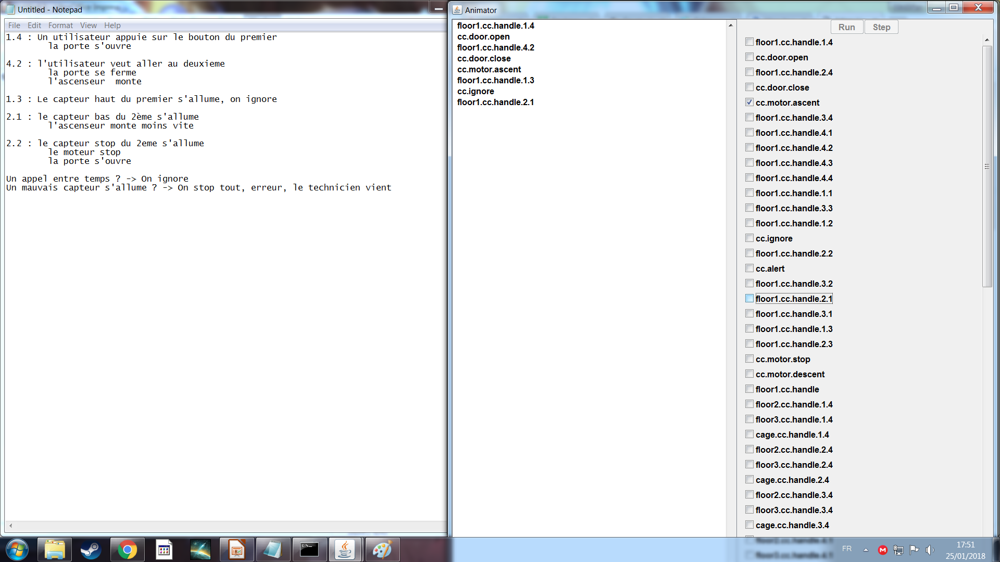
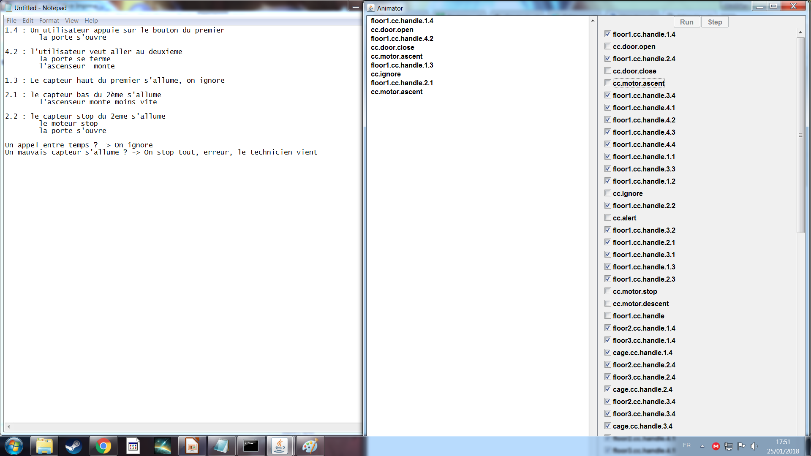
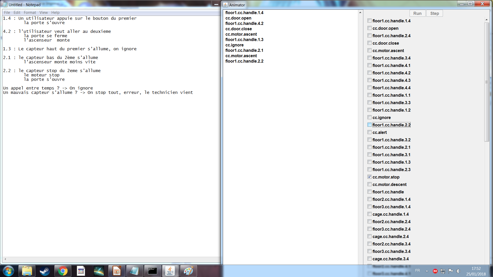
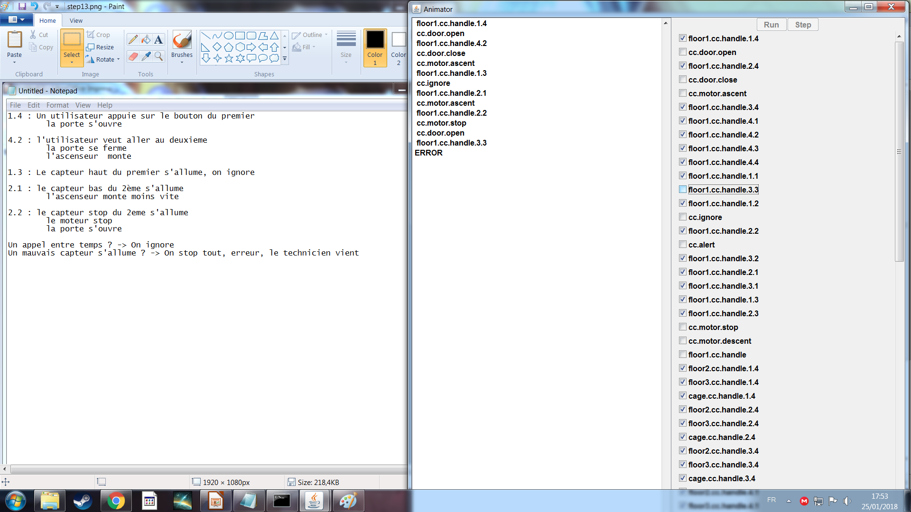

//Interface de communication avec le centre de controle
//var:from indique la source (1..3 pour floor, 4 pour la cage)
//var:say indique le message
// (Pour floor : 1 = surcourse bas / 2 = stop / 3 = surcourse haut / 4 = call)
// (Pour la cage : 1..3 = call / 4 = capteur cage -> ouvrir la porte)
interface SignalReceiveIt(int from,int say){
handle[from][say];
}
//Description de la cage d'ascenseur
component ELEVATORCAGE (int NBFLOOR){
require
cc:SignalReceiveIt(1,2);
provide
door:DoorControlIt;
/%
ELEVATORCAGE(NBFLOOR = 1) = EC[NBFLOOR],
EC[NBFLOOR] = (
cc.handle[NBFLOOR+1][1..NBFLOOR+1] -> EC[NBFLOOR]
| door.open -> EC[NBFLOOR]
| door.close -> EC[NBFLOOR]
)+{door.DoorControlIt,cc.SignalReceiveIt}.
%/
}
//Lorqu'un bouton est appuyé ...
cc.handle[i:Floors][Call] ->
(when(from == to & from == i) door.open -> CTRL[from][to]
|when(from == to & from > i) door.close -> motor.descent -> CTRL[from][i]
|when(from == to & from < i) door.close -> motor.ascent -> CTRL[from][i]
|when(from != to) ignore -> CTRL[from][to]
)
Etat inital
Appel de l'ascenseur au premier étage
Ouverture de la porte
L'utilisateur veut aller au deuxième étage
La porte se ferme
Le moteur démarre, l'ascenseur monte
La capteur haut du premier étage detecte l'ascenseur
On l'ignore
Le capteur bas de l'étage 2 detecte l'ascenseur
L'ascenseur ralentit
L'ascenseur arrive au capteur stop de l'étage 2
Le moteur s'arrète.
La porte de l'ascenseur s'ouvre
Si on active un capteur sans raison apparente, le système génére un erreur qui doit être traité par la maitenance
